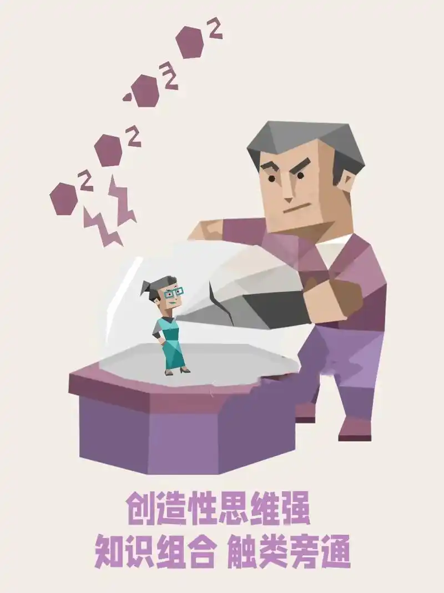

ENTP-A性格分析 - 创新思维
ENTP-A：创新思维的“永动机”

ENTP-A人格类型，在MBTI体系中被称为“雄辩家”或“发明家”，其标志性的创新思维堪称一种生生不息的动力源。他们以外向直觉（Ne）为主导功能，思维如雷达般持续扫描外部世界的各种可能性、联系和模式。正如《MBTI手册》所强调的：“Ne主导的个体擅长看到事物背后的含义、相互关联以及未来潜力。”这使得ENTP-A的头脑成为创意的孵化器，不断生成“如果……会怎样？”的疑问，并积极寻找突破常规的解决方案。
ENTP-A的创新过程充满探索性和实验性。他们乐于挑战现状，质疑传统假设——不是为了破坏，而是为了检验其有效性并寻求更优解。他们享受智力交锋，在辩论中打磨观点，甚至可能故意持相反立场以激发更深入思考和新视角。这种特质在团队中尤为珍贵，能有效打破群体思维僵局。16Personalities网站精准描述道：“ENTP会为了好玩而争论不休，他们思维敏捷、机智，喜欢用逻辑来剖析他人的想法和信念。” 这种看似“好辩”的特质，实则是其创新思维锐利性的体现。
ENTP-A的“Assertive”特质（相对于Turbulent），为其创新思维增添了关键优势：抗压性与目标导向。他们面对挫折时更显韧性，不易被失败或反对意见过度干扰，能更快地从负面反馈中恢复并调整方向。这种内在稳定性使其创新过程更具持续性和高效性。同时，Assertive特质赋予他们更强的自信和行动力，使其不满足于空想，而是积极推动想法落地，将创意火花转化为实际的项目或解决方案。16Personalities指出，Assertive个体“即使在压力下也对自己处理问题的能力充满信心”，这使ENTP-A在充满不确定性的创新道路上步伐更稳健。
ENTP-A的创新思维是Ne的无限探索欲与Assertive特质的坚韧自信的完美结合。他们不仅是新点子的永不枯竭的源泉，更是推动变革的积极实践者。在当今瞬息万变的时代，ENTP-A凭借其挑战边界的勇气、关联万物的洞察力以及在压力下依然前行的决心，成为驱动社会创新车轮的重要力量——他们的思维永不停歇，创新的脚步亦永不止息。
"总是能提出独特的解决方案，讨厌常规和重复"